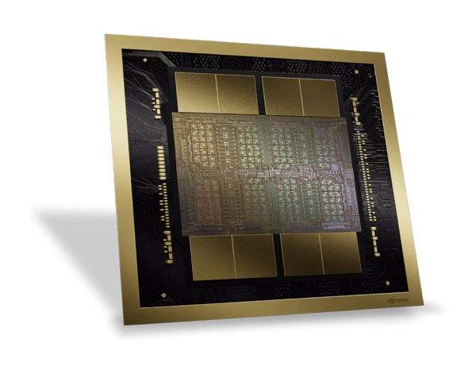
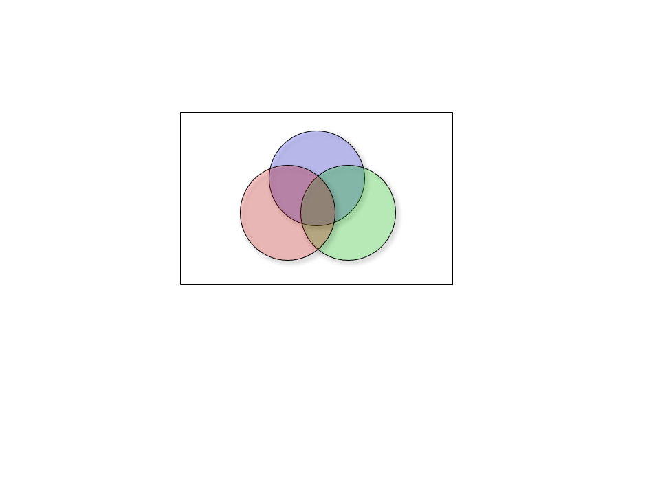
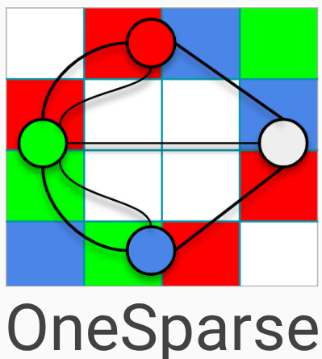
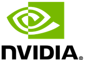
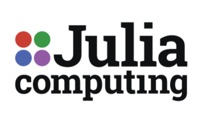

OneSparse combines the power of Linear
Algebra and PostgreSQL to create the
next-generation of data-rich AI and ML
applications. Powerful SQL queries,
combined with the analytical power
Sparse Linear Algebra, provide a rich
framework for high performance GraphRAG,
Sparse Distributed Representations, and
architecture agnostic sparse parallel
performance on CPUs, GPUs, and cutting
edge sparse accelerators.
Graphs present the most difficult computing challenges
faced by enterprise users today. Trillions of rows of
data are stored in relational databases, but SQL does not
have the analytical power to bring insight from existing
highly connected sparse data.
OneSparse brings high-performance, multi-core graph
analytics to Postgres. By leveraging the SuiteSparse
GraphBLAS library OneSparse can traverse billions of edges
per second on immense graphs using all available cpu
resources on readily available commodity cloud
hardware.
Billions of Edges Per Second with Postgres
Below are benchmarks on a 48-core AMD EPYC cloud server
using a variety of graphs from
the GAP
Graph Benchmarks. GAP is the industry standard
benchmark for measuring the performance of various popular
graph algorithms on public graph data available
from The SuiteSparse
Collection. OneSparse is proud to be one of the only
graph database solutions that has published GAP
results.
OneSparse brings large scale graph analytics to Postgres.
Users can pick from a large library of preexisting
algorithms like those used in GAP, or roll their own using
our powerful Linear Algebra framework
NVIDIA Blackwell

By utilizing the powerful JIT compiler built into the
SuiteSparse library, OneSparse is able to target high
performance code onto a variety of architectures,
including NVIDIA CUDA. Upcoming Blackwell architectures
with unified physical memory bring drastic improvements
in sparse graph algorithms, avoid the ping-pong effects
of low speed data copying across slow PCI busses.
Future Accelerators
Test By utilizing the powerful JIT compiler built into
the SuiteSparse library, OneSparse is able to target
high performance code onto a variety of architectures,
including NVIDIA CUDA. Upcoming Blackwell architectures
with unified physical memory bring drastic improvements
in sparse graph algorithms, avoid the ping-pong effects
of low speed data copying across slow PCI busses.

We Support The Most Advanced Sparse Computing Libraries
OneSparse Postgres
OneSparse's core product
provides high performance sparse
linear algebra on the most
powerful open-source relational
database in the world:
PostgreSQL.
The reference implementation of
the GraphBLAS API is a
foundational library for all of
OneSparse and many other software
frameworks like MATLAB. OneSparse
helps support the development of
SuiteSparse and contribute
important use cases to its future
development.
LAGraph is a suite of advanced, high performance
graph algorithms implemented with the GraphBLAS. These
battle-tested algorithms come built into OneSparse,
quickly accelerating analytics with minimal setup.
Postgres is the most popular database in the world,
and Python is the gold standard for ML, AI and other
data science programming languages. Our team has
decades of Python programming experience, and we plan
very deep integration of OneSparse with the native
python-graphblas library.
OneSparse is powered by the SuiteSparse GraphBLAS library
which is the high performance reference implemntation
of the GraphBLAS
Organization.



Michel Pelletier
Michel is Python and Postgres
coder and author of multiple
libraries and extensions. He
has decades of experience with
complex data problems from large
scale text search to machine
learning and graph analysis. He
is a member of the GraphBLAS C
API Committee and long time
contributor to sparse linear
algebra with the GraphBLAS.